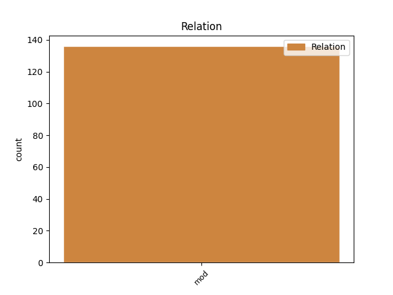
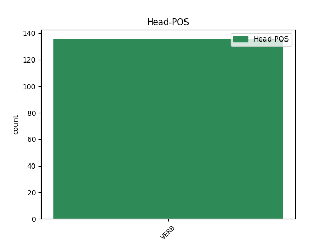
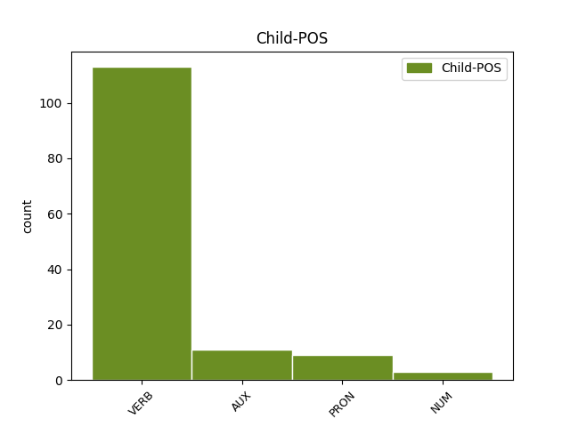

Distribution of features within this leaf



Agreement Rules sorted by frequency.
- When the dependent token is the modifer(mod) of the head token, and the head token is VERB and the dependent token is VERB.
1 καὶ _ _ _ _ 0 _ _ _
2 τοῦ _ _ _ _ 0 _ _ _
3 ποταμοῦ _ _ _ _ 0 _ _ _
4 ἐντεῦθεν _ _ _ _ 0 _ _ _
5 καὶ _ _ _ _ 0 _ _ _
6 ἐκεῖθεν _ _ _ _ 0 _ _ _
7 ξύλον _ _ _ _ 0 _ _ _
8 ζωῆς _ _ _ _ 0 _ _ _
9 ποιῶν ποιέω VERB V- Case=Nom|Gender=Masc|Number=Sing|Tense=Pres|VerbForm=Part|Voice=Act 0 _ _ _
10 καρποὺς _ _ _ _ 0 _ _ _
11 δώδεκα _ _ _ _ 0 _ _ _
12 κατὰ _ _ _ _ 0 _ _ _
13 μῆνα _ _ _ _ 0 _ _ _
14 ἕκαστον _ _ _ _ 0 _ _ _
15 ἀποδιδοὺς ἀποδίδωμι VERB V- Case=Nom|Gender=Masc|Number=Sing|Tense=Pres|VerbForm=Part|Voice=Act 9 mod _ ref=REV_22.2
16 τὸν _ _ _ _ 0 _ _ _
17 καρπὸν _ _ _ _ 0 _ _ _
18 αὐτοῦ _ _ _ _ 0 _ _ _
1 ἄρα _ _ _ _ 0 _ _ _
2 οὖν _ _ _ _ 0 _ _ _
3 οὐκέτι _ _ _ _ 0 _ _ _
4 ἐστὲ _ _ _ _ 0 _ _ _
5 ξένοι _ _ _ _ 0 _ _ _
6 καὶ _ _ _ _ 0 _ _ _
7 πάροικοι _ _ _ _ 0 _ _ _
8 ἀλλὰ _ _ _ _ 0 _ _ _
9 ἐστὲ _ _ _ _ 0 _ _ _
10 συνπολῖται _ _ _ _ 0 _ _ _
11 τῶν _ _ _ _ 0 _ _ _
12 ἁγίων _ _ _ _ 0 _ _ _
13 καὶ _ _ _ _ 0 _ _ _
14 οἰκεῖοι _ _ _ _ 0 _ _ _
15 τοῦ _ _ _ _ 0 _ _ _
16 θεοῦ _ _ _ _ 0 _ _ _
17 ἐποικοδομηθέντες ἐποικοδομέω VERB V- Aspect=Perf|Case=Nom|Gender=Masc|Number=Plur|Tense=Past|VerbForm=Part|Voice=Pass 0 _ _ _
18 ἐπὶ _ _ _ _ 0 _ _ _
19 τῷ _ _ _ _ 0 _ _ _
20 θεμελίῳ _ _ _ _ 0 _ _ _
21 τῶν _ _ _ _ 0 _ _ _
22 ἀποστόλων _ _ _ _ 0 _ _ _
23 καὶ _ _ _ _ 0 _ _ _
24 προφητῶν _ _ _ _ 0 _ _ _
25 ὄντος εἰμί AUX V- Case=Gen|Gender=Masc|Number=Sing|Tense=Pres|VerbForm=Part|Voice=Act 17 mod _ LId=1|ref=EPH_2.20
26 ἀκρογωνιαίου _ _ _ _ 0 _ _ _
27 αὐτοῦ _ _ _ _ 0 _ _ _
28 Χριστοῦ _ _ _ _ 0 _ _ _
29 Ἰησοῦ _ _ _ _ 0 _ _ _
30 ἐν _ _ _ _ 0 _ _ _
31 ᾧ _ _ _ _ 0 _ _ _
32 πᾶσα _ _ _ _ 0 _ _ _
33 οἰκοδομὴ _ _ _ _ 0 _ _ _
34 συναρμολογουμένη _ _ _ _ 0 _ _ _
35 αὔξει _ _ _ _ 0 _ _ _
36 εἰς _ _ _ _ 0 _ _ _
37 ναὸν _ _ _ _ 0 _ _ _
38 ἅγιον _ _ _ _ 0 _ _ _
39 ἐν _ _ _ _ 0 _ _ _
40 κυρίῳ _ _ _ _ 0 _ _ _
41 ἐν _ _ _ _ 0 _ _ _
42 ᾧ _ _ _ _ 0 _ _ _
43 καὶ _ _ _ _ 0 _ _ _
44 ὑμεῖς _ _ _ _ 0 _ _ _
45 συνοικοδομεῖσθε _ _ _ _ 0 _ _ _
46 εἰς _ _ _ _ 0 _ _ _
47 κατοικητήριον _ _ _ _ 0 _ _ _
48 τοῦ _ _ _ _ 0 _ _ _
49 θεοῦ _ _ _ _ 0 _ _ _
50 ἐν _ _ _ _ 0 _ _ _
51 πνεύματι _ _ _ _ 0 _ _ _
1 τούτων _ _ _ _ 0 _ _ _
2 οἱ _ _ _ _ 0 _ _ _
3 μὲν _ _ _ _ 0 _ _ _
4 παρὰ _ _ _ _ 0 _ _ _
5 θάλασσαν _ _ _ _ 0 _ _ _
6 κατοικημένοι _ _ _ _ 0 _ _ _
7 ἐν _ _ _ _ 0 _ _ _
8 τῇσι _ _ _ _ 0 _ _ _
9 νηυσὶ _ _ _ _ 0 _ _ _
10 εἵποντο _ _ _ _ 0 _ _ _
11 οἱ _ _ _ _ 0 _ _ _
12 δὲ _ _ _ _ 0 _ _ _
13 αὐτῶν αὐτός PRON Pp Case=Gen|Gender=Masc|Number=Plur|Person=3|PronType=Prs 16 mod _ ref=7.110.1
14 τὴν _ _ _ _ 0 _ _ _
15 μεσόγαιαν _ _ _ _ 0 _ _ _
16 οἰκέοντες οἰκέω VERB V- Case=Nom|Gender=Masc|Number=Plur|Tense=Pres|VerbForm=Part|Voice=Act 0 _ _ _
17 καταλεχθέντες _ _ _ _ 0 _ _ _
18 τε _ _ _ _ 0 _ _ _
19 ὑπ’ _ _ _ _ 0 _ _ _
20 ἐμεῦ _ _ _ _ 0 _ _ _
21 πλὴν _ _ _ _ 0 _ _ _
22 Σατρέων _ _ _ _ 0 _ _ _
23 οἱ _ _ _ _ 0 _ _ _
24 ἄλλοι _ _ _ _ 0 _ _ _
25 πάντες _ _ _ _ 0 _ _ _
26 πεζῇ _ _ _ _ 0 _ _ _
27 ἀναγκαζόμενοι _ _ _ _ 0 _ _ _
28 εἵποντο _ _ _ _ 0 _ _ _
1 ταῦτα _ _ _ _ 0 _ _ _
2 δὲ _ _ _ _ 0 _ _ _
3 αὐτοῦ _ _ _ _ 0 _ _ _
4 εἰπόντος _ _ _ _ 0 _ _ _
5 εἷς εἷς NUM Ma Case=Nom|Gender=Masc|Number=Sing 6 mod _ ref=JOHN_18.22
6 παρεστηκὼς παρίστημι VERB V- Aspect=Perf|Case=Nom|Gender=Masc|Number=Sing|Tense=Past|VerbForm=Part|Voice=Act 0 _ _ _
7 τῶν _ _ _ _ 0 _ _ _
8 ὑπηρετῶν _ _ _ _ 0 _ _ _
9 ἔδωκεν _ _ _ _ 0 _ _ _
10 ῥάπισμα _ _ _ _ 0 _ _ _
11 τῷ _ _ _ _ 0 _ _ _
12 Ἰησοῦ _ _ _ _ 0 _ _ _
13 εἰπών _ _ _ _ 0 _ _ _
Disagree Examples:
1 ἐς _ _ _ _ 0 _ _ _
2 τὸ _ _ _ _ 0 _ _ _
3 πεδίον _ _ _ _ 0 _ _ _
4 δὲ _ _ _ _ 0 _ _ _
5 συνελθόντων συνέρχομαι VERB V- Aspect=Perf|Case=Gen|Gender=Masc|Number=Plur|Tense=Past|VerbForm=Part|Voice=Act 0 _ _ _
6 τοῦτο _ _ _ _ 0 _ _ _
7 τὸ _ _ _ _ 0 _ _ _
8 πρὸ _ _ _ _ 0 _ _ _
9 τοῦ _ _ _ _ 0 _ _ _
10 ἄστεος _ _ _ _ 0 _ _ _
11 ἐστὶ _ _ _ _ 0 _ _ _
12 τοῦ _ _ _ _ 0 _ _ _
13 Σαρδιηνοῦ _ _ _ _ 0 _ _ _
14 ἐὸν εἰμί AUX V- Case=Acc|Gender=Neut|Number=Sing|Tense=Pres|VerbForm=Part|Voice=Act 5 mod _ LId=1|ref=1.80.1
15 μέγα _ _ _ _ 0 _ _ _
16 τε _ _ _ _ 0 _ _ _
17 καὶ _ _ _ _ 0 _ _ _
18 ψιλὸν _ _ _ _ 0 _ _ _
19 διὰ _ _ _ _ 0 _ _ _
20 δὲ _ _ _ _ 0 _ _ _
21 αὐτοῦ _ _ _ _ 0 _ _ _
22 ποταμοὶ _ _ _ _ 0 _ _ _
23 ῥέοντες _ _ _ _ 0 _ _ _
24 καὶ _ _ _ _ 0 _ _ _
25 ἄλλοι _ _ _ _ 0 _ _ _
26 καὶ _ _ _ _ 0 _ _ _
27 Ὕλλος _ _ _ _ 0 _ _ _
28 συρρηγνῦσι _ _ _ _ 0 _ _ _
29 ἐς _ _ _ _ 0 _ _ _
30 τὸν _ _ _ _ 0 _ _ _
31 μέγιστον _ _ _ _ 0 _ _ _
32 καλεόμενον _ _ _ _ 0 _ _ _
33 δὲ _ _ _ _ 0 _ _ _
34 Ἕρμον _ _ _ _ 0 _ _ _
35 ὃς _ _ _ _ 0 _ _ _
36 ἐξ _ _ _ _ 0 _ _ _
37 ὄρεος _ _ _ _ 0 _ _ _
38 ἱροῦ _ _ _ _ 0 _ _ _
39 μητρὸς _ _ _ _ 0 _ _ _
40 Δινδυμήνης _ _ _ _ 0 _ _ _
41 ῥέων _ _ _ _ 0 _ _ _
42 ἐκδιδοῖ _ _ _ _ 0 _ _ _
43 ἐς _ _ _ _ 0 _ _ _
44 θάλασσαν _ _ _ _ 0 _ _ _
45 κατὰ _ _ _ _ 0 _ _ _
46 Φωκαίην _ _ _ _ 0 _ _ _
47 πόλιν _ _ _ _ 0 _ _ _
48 ἐνθαῦτα _ _ _ _ 0 _ _ _
49 ὁ _ _ _ _ 0 _ _ _
50 Κῦρος _ _ _ _ 0 _ _ _
51 ὡς _ _ _ _ 0 _ _ _
52 εἶδε _ _ _ _ 0 _ _ _
53 τοὺς _ _ _ _ 0 _ _ _
54 Λυδοὺς _ _ _ _ 0 _ _ _
55 ἐς _ _ _ _ 0 _ _ _
56 μάχην _ _ _ _ 0 _ _ _
57 τασσομένους _ _ _ _ 0 _ _ _
58 καταρρωδήσας _ _ _ _ 0 _ _ _
59 τὴν _ _ _ _ 0 _ _ _
60 ἵππον _ _ _ _ 0 _ _ _
61 ἐποίησε _ _ _ _ 0 _ _ _
62 Ἁρπάγου _ _ _ _ 0 _ _ _
63 ὑποθεμένου _ _ _ _ 0 _ _ _
64 ἀνδρὸς _ _ _ _ 0 _ _ _
65 Μήδου _ _ _ _ 0 _ _ _
66 τοιόνδε _ _ _ _ 0 _ _ _
1 βοηθησάντων βοηθέω VERB V- Aspect=Perf|Case=Gen|Gender=Masc|Number=Plur|Tense=Past|VerbForm=Part|Voice=Act 0 _ _ _
2 δὲ _ _ _ _ 0 _ _ _
3 Ἀργείων _ _ _ _ 0 _ _ _
4 τῇ _ _ _ _ 0 _ _ _
5 σφετέρῃ _ _ _ _ 0 _ _ _
6 ἀποταμνομένῃ ἀποτέμνω VERB V- Case=Dat|Gender=Fem|Number=Sing|Tense=Pres|VerbForm=Part|Voice=Pass 1 mod _ ref=1.82.3
7 ἐνθαῦτα _ _ _ _ 0 _ _ _
8 συνέβησαν _ _ _ _ 0 _ _ _
9 ἐς _ _ _ _ 0 _ _ _
10 λόγους _ _ _ _ 0 _ _ _
11 συνελθόντες _ _ _ _ 0 _ _ _
12 ὥστε _ _ _ _ 0 _ _ _
13 τριηκοσίους _ _ _ _ 0 _ _ _
14 ἑκατέρων _ _ _ _ 0 _ _ _
15 μαχέσασθαι _ _ _ _ 0 _ _ _
16 ὁκότεροι _ _ _ _ 0 _ _ _
17 δ’ _ _ _ _ 0 _ _ _
18 ἂν _ _ _ _ 0 _ _ _
19 περιγένωνται _ _ _ _ 0 _ _ _
20 τούτων _ _ _ _ 0 _ _ _
21 εἶναι _ _ _ _ 0 _ _ _
22 τὸν _ _ _ _ 0 _ _ _
23 χῶρον _ _ _ _ 0 _ _ _
1 πλεῦνος _ _ _ _ 0 _ _ _
2 δὲ _ _ _ _ 0 _ _ _
3 αἰεὶ _ _ _ _ 0 _ _ _
4 γινομένου γίγνομαι VERB V- Case=Gen|Gender=Neut|Number=Sing|Tense=Pres|VerbForm=Part|Voice=Mid 0 _ _ _
5 τοῦ _ _ _ _ 0 _ _ _
6 ἐπιφοιτέοντος _ _ _ _ 0 _ _ _
7 οἷα _ _ _ _ 0 _ _ _
8 πυνθανομένων πυνθάνομαι VERB V- Case=Gen|Gender=Masc|Number=Plur|Tense=Pres|VerbForm=Part|Voice=Mid 4 mod _ ref=1.97.1
9 τὰς _ _ _ _ 0 _ _ _
10 δίκας _ _ _ _ 0 _ _ _
11 ἀποβαίνειν _ _ _ _ 0 _ _ _
12 κατὰ _ _ _ _ 0 _ _ _
13 τὸ _ _ _ _ 0 _ _ _
14 ἐόν _ _ _ _ 0 _ _ _
15 γνοὺς _ _ _ _ 0 _ _ _
16 ὁ _ _ _ _ 0 _ _ _
17 Δηιόκης _ _ _ _ 0 _ _ _
18 ἐς _ _ _ _ 0 _ _ _
19 ἑωυτὸν _ _ _ _ 0 _ _ _
20 πᾶν _ _ _ _ 0 _ _ _
21 ἀνακείμενον _ _ _ _ 0 _ _ _
22 οὔτε _ _ _ _ 0 _ _ _
23 κατίζειν _ _ _ _ 0 _ _ _
24 ἔτι _ _ _ _ 0 _ _ _
25 ἤθελε _ _ _ _ 0 _ _ _
26 ἔνθα _ _ _ _ 0 _ _ _
27 περ _ _ _ _ 0 _ _ _
28 πρότερον _ _ _ _ 0 _ _ _
29 προκατίζων _ _ _ _ 0 _ _ _
30 ἐδίκαζε _ _ _ _ 0 _ _ _
31 οὔτ’ _ _ _ _ 0 _ _ _
32 ἔφη _ _ _ _ 0 _ _ _
33 δίκαν _ _ _ _ 0 _ _ _
34 ἔτι _ _ _ _ 0 _ _ _
1 Ἱστιαίῳ _ _ _ _ 0 _ _ _
2 δὲ _ _ _ _ 0 _ _ _
3 τῷ _ _ _ _ 0 _ _ _
4 Μιλησίῳ _ _ _ _ 0 _ _ _
5 ἐόντι _ _ _ _ 0 _ _ _
6 περὶ _ _ _ _ 0 _ _ _
7 Βυζάντιον _ _ _ _ 0 _ _ _
8 καὶ _ _ _ _ 0 _ _ _
9 συλλαμβάνοντι συλλαμβάνω VERB V- Case=Dat|Gender=Masc|Number=Sing|Tense=Pres|VerbForm=Part|Voice=Act 0 _ _ _
10 τὰς _ _ _ _ 0 _ _ _
11 Ἰώνων _ _ _ _ 0 _ _ _
12 ὁλκάδας _ _ _ _ 0 _ _ _
13 ἐκπλεούσας ἐκπλέω VERB V- Case=Acc|Gender=Fem|Number=Plur|Tense=Pres|VerbForm=Part|Voice=Act 9 mod _ ref=6.26.1
14 ἐκ _ _ _ _ 0 _ _ _
15 τοῦ _ _ _ _ 0 _ _ _
16 Πόντου _ _ _ _ 0 _ _ _
17 ἐξαγγέλλεται _ _ _ _ 0 _ _ _
18 τὰ _ _ _ _ 0 _ _ _
19 περὶ _ _ _ _ 0 _ _ _
20 τὴν _ _ _ _ 0 _ _ _
21 Μίλητον _ _ _ _ 0 _ _ _
22 γενόμενα _ _ _ _ 0 _ _ _
1 νοστήσαντα _ _ _ _ 0 _ _ _
2 δέ _ _ _ _ 0 _ _ _
3 μιν _ _ _ _ 0 _ _ _
4 ὑπῆγον _ _ _ _ 0 _ _ _
5 οἱ _ _ _ _ 0 _ _ _
6 ἐχθροὶ _ _ _ _ 0 _ _ _
7 ὑπὸ _ _ _ _ 0 _ _ _
8 τοὺς _ _ _ _ 0 _ _ _
9 ἐφόρους _ _ _ _ 0 _ _ _
10 φάμενοί _ _ _ _ 0 _ _ _
11 μιν _ _ _ _ 0 _ _ _
12 δωροδοκήσαντα δωροδοκέω VERB V- Aspect=Perf|Case=Acc|Gender=Masc|Number=Sing|Tense=Past|VerbForm=Part|Voice=Act 0 _ _ _
13 οὐκ _ _ _ _ 0 _ _ _
14 ἑλεῖν _ _ _ _ 0 _ _ _
15 τὸ _ _ _ _ 0 _ _ _
16 Ἄργος _ _ _ _ 0 _ _ _
17 παρεὸν πάρειμι VERB V- Case=Acc|Gender=Neut|Number=Sing|Tense=Pres|VerbForm=Part|Voice=Act 12 mod _ LId=1|ref=6.82.1
18 εὐπετέως _ _ _ _ 0 _ _ _
19 μιν _ _ _ _ 0 _ _ _
20 ἑλεῖν _ _ _ _ 0 _ _ _